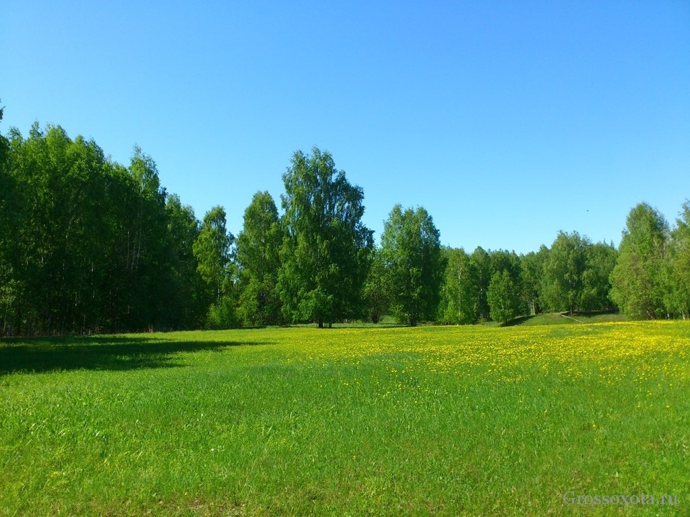

Многим может показаться, что создание сайтов дело сложное, даже невыполнимое. Для этого нужно много учиться, узнать, сделать. На самом деле существует около 100 тегов, которые даже не обязательно учить. Важно лишь понять, что и где применяется. Информацию можно подсмотреть в различных шпаргалках, а со временем вы начнете вспоминать теги на автомате.

Простой код позволяет сделать текст красным
Написать жирным не намного сложнее
Мы дошли до самого низа
Теперь вы знаете чуть больше о тегах и можете использовать их. Давайте попробуем вставить ссылочку, чтобы связать несколько страниц воедино.
К примеру, вот ссылка на мой блог - Start-Luck - рассказывает просто о "сложном".